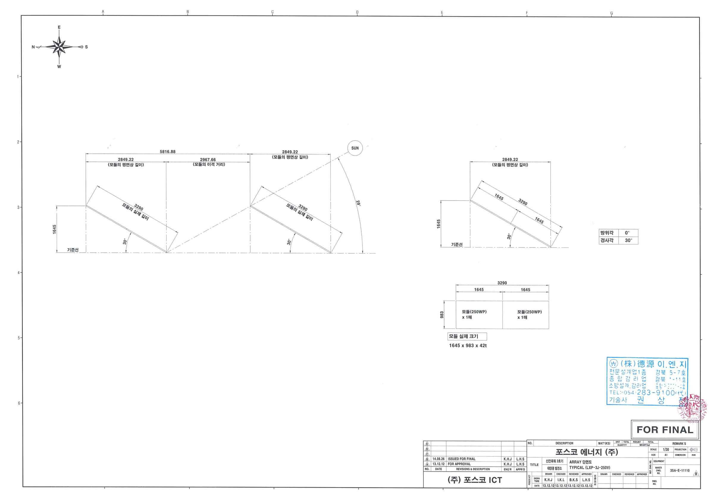
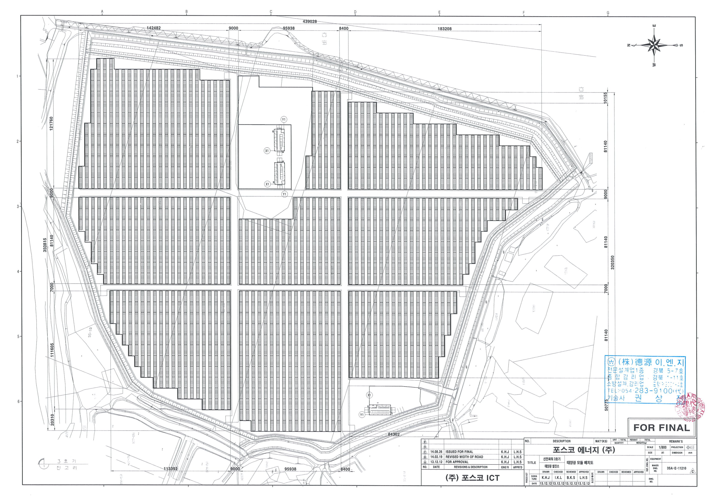
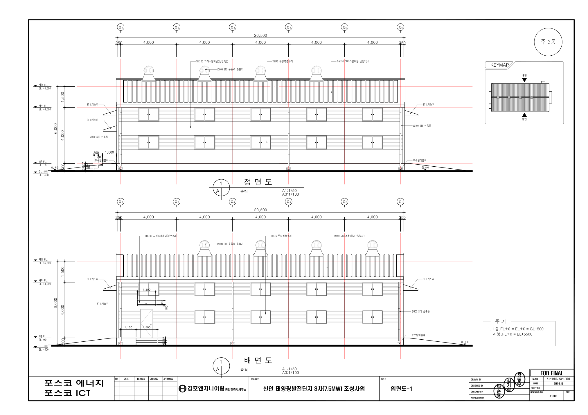
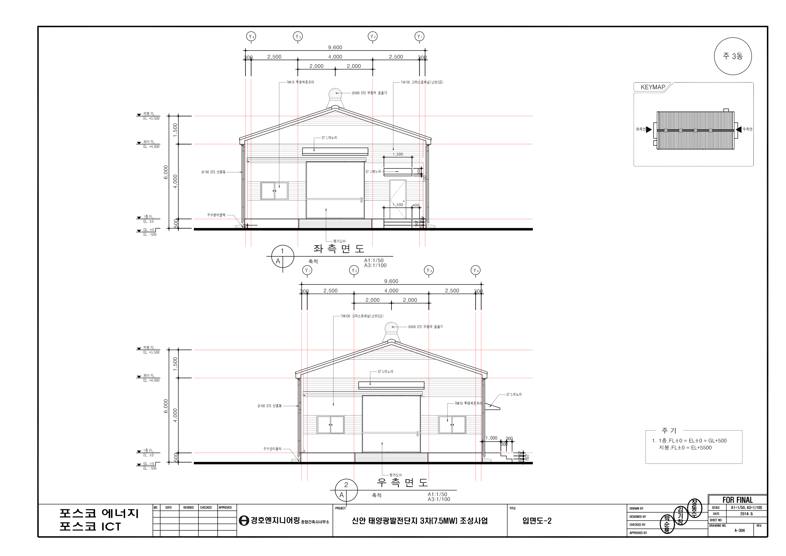
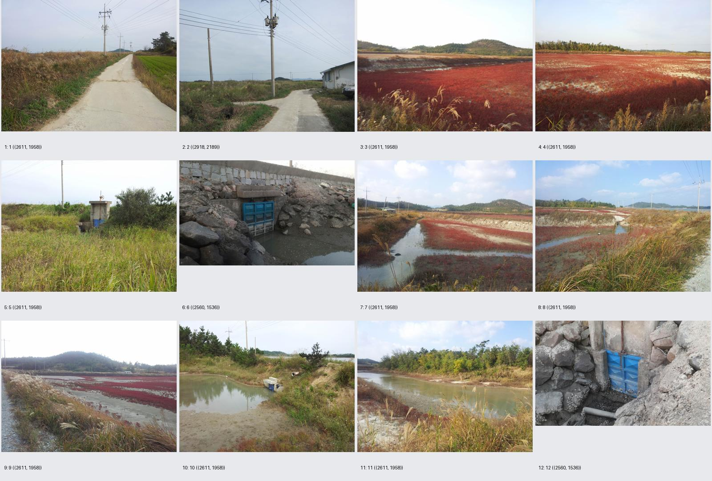
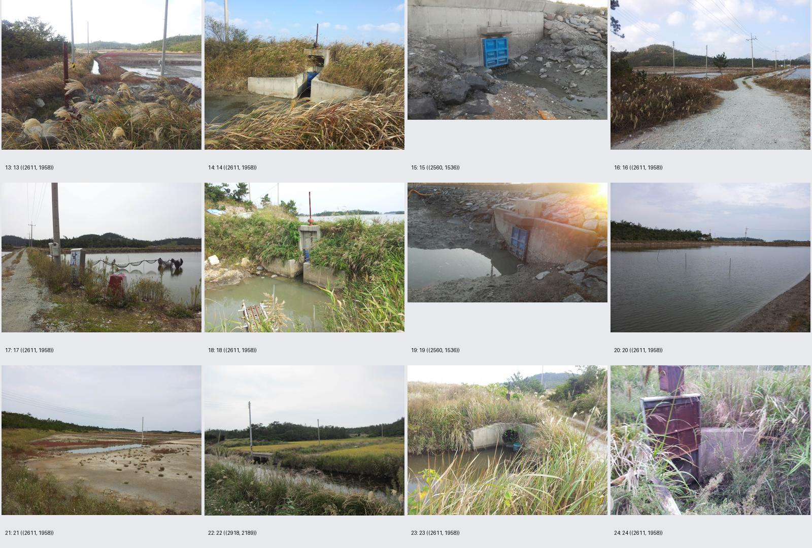
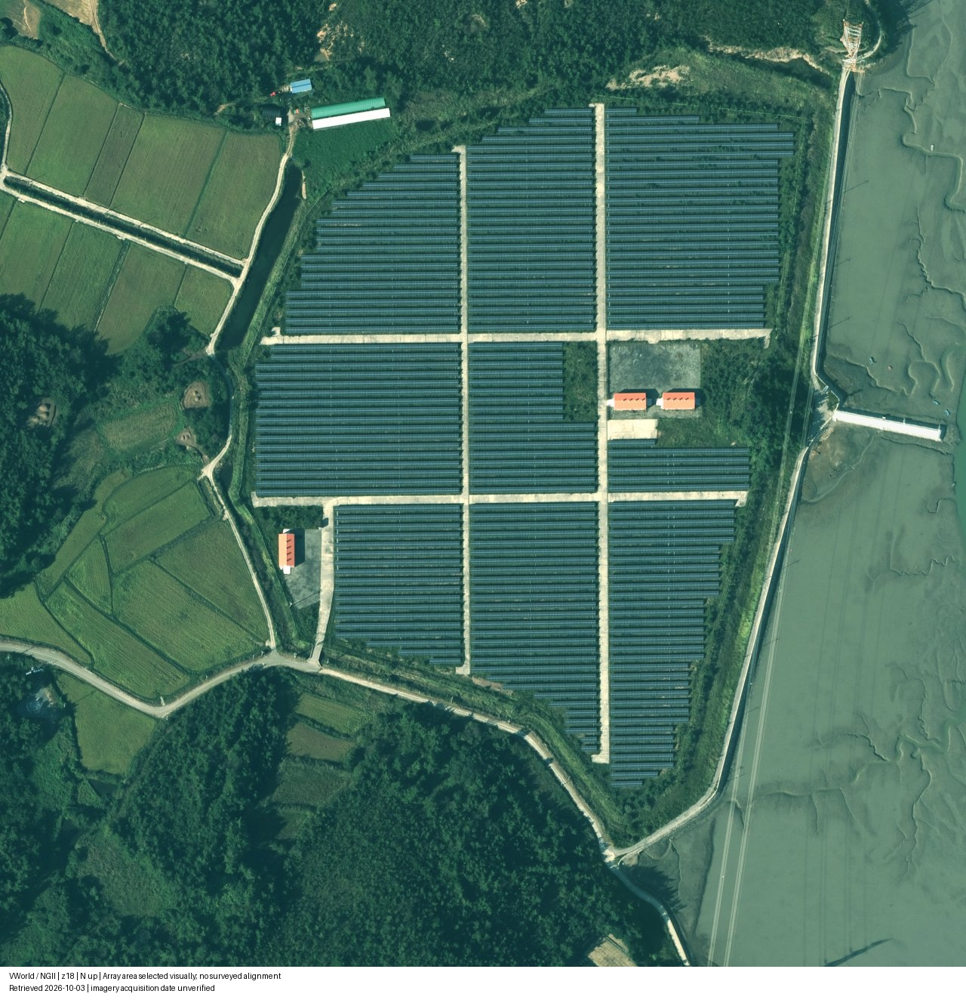

← 3D 뷰어도면에 근거하고, 추정은 구분합니다.
신안 3호기 준공도서 CD를 바탕으로 제작했습니다. 모듈 위치와 ID는 원본 CAD에서 추출했으며, 재질·조명은 실시간 시각화를 위해 제작했습니다. 추가 위성영상에서 지붕과 주변 배치를 참고했습니다. 완공 설비의 근접·측면 사진과 측량 고도가 없어 실사와 동일한 재현 또는 AAA 완성 판정을 할 근거는 부족합니다.
| 내용 | 근거 및 한계 |
|---|
| 모듈 30,000개 / 1,500그룹 | 3SA-E-11210_C.dwg 블록 직접 추출. 도면 ID이며 실물 시리얼과 미연결. |
| 250 W / 30° / 983×1,645 mm | 전기 도면 p21. CAD의 반올림 투영 길이 1,425 mm를 유지. |
| 전기실 3동 | 배치 CAD의 위치·회전. 상세 외관은 주3동 A303/A304 기준이며 다른 동에 적용한 상세는 공통 표현. |
| 지표와 지형 | 로컬 평탄 지면. 도면 외 경관·지표 재질은 추정. 측량 DEM이나 정사영상으로 정합하지 않음. |
| 물리 엔진 | 보행 중력·충돌 체험. 구조·풍하중·전기·열 해석 용도가 아님. |
모듈 규격과 배치

전기 도면 p21 · 3SA-E-11110 — 모듈 규격·경사 기준.
전기 도면 p23 · 3SA-E-11210 — 전체 배치. 종이의 북쪽 방향과 웹의 로컬 북쪽 방향은 회전 관계입니다.
전기실 상세

A303 · 주3동 — 2단 창호, 4개 무동력 흡출기, 줄눈.
A304 · 주3동 — 박공 폐쇄, 출입문, 캐노피, 홈통과 계단.
제공된 현장 사진
아래 사진은 공사 전 주변 환경입니다. 완공 상태나 현재 상태를 보여주는 사진으로 해석하면 안 됩니다.

준공도서 CD 내 현장 사진 1~12. 지면 색과 주변 식생을 참고했으며 정확한 위치·고도 근거로 사용하지 않았습니다.
사진 13~24. 갈대·염전·비포장 진입로와 수문.
다음 정밀화에 필요한 자료
완공 전기실 4면 사진과 지붕 사진, 모듈·프레임·지지대 근접 사진, 최신 드론 정사영상과 지상 기준점·좌표계가 있는 DEM, 실물 설비 ID 대조표가 필요합니다. 해당 자료가 확보되면 재질·지형·세부 형상·분석 결과의 정합 정확도를 높일 수 있습니다.
모듈 ID 카탈로그 다운로드 · 데이터·텍스처 출처와 범위
추가 위성영상과 주변 환경
VWorld / NGII 위성영상에서 산림·농경지·제방·갯벌·진입로의 대략적 배치를 참고했습니다. 높이와 식생, 수심은 추정입니다. 지리 좌표 정합 또는 측량 지형이 아니며 주변 환경은 보행용 충돌 지형이 아닙니다. 위성영상 촬영일은 미확인입니다.

2026-10-03 조회 · VWorld / NGII. 조회 날짜와 촬영 날짜는 다릅니다.